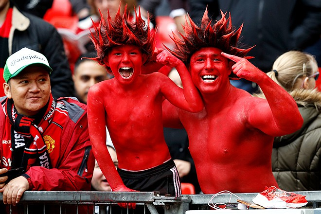

История
Ранний период (1878—1945)
Клуб был сформирован под названием «Ньютон Хит (Ланкашир энд Йоркшир Рейлуэй)» (англ. Newton Heath L&YR F.C) группой рабочих-железнодорожников Манчестера в 1878 году[16][17]. Клубная форма содержала два цвета — зелёный и золотой[17]. В сезоне 1886/87 «Ньютон Хит» впервые принял участие в общенациональном турнире, Кубке Англии (до этого команда играла в региональных турнирах, Кубке Ланкашира и Кубке Манчестера). В том составе за команду выступал ряд игроков сборной Уэльса, включая Джека Пауэлла, Джека Даути, Роджера Даути и Джо Дейвиса. На протяжении 15 лет «Ньютон Хит» выступал на небольшом полуразрушенном поле «Норт Роуд», после чего переехал на стадион «Бэнк Стрит» в Клейтоне в 1893 году. Годом ранее, в сезоне 1892/93, клуб вступил в Футбольную лигу и отделился от железнодорожной станции, став независимым[18][19]. Была учреждена должность клубного секретаря, а из названия исчезло дополнение «Ланкашир энд Йоркшир Рейлуэй». Клуб стал называться просто «Ньютон Хит». В 1902 году команда была на грани банкротства, имея задолженность в размере более 2500 фунтов. Стадион «Бэнк Стрит» даже был закрыт судебными приставами[20]. От закрытия клуб спас Джон Генри Дейвис, управляющий пивоваренного завода Манчестера, который вложил в команду солидные по тем временам инвестиции[16][21]. С 26 апреля 1902 года клуб изменил название и стал официально называться «Манчестер Юнайтед». Одновременно поменялись клубные цвета — с зелёного и золотого на красный и белый[17].
В сентябре 1903 года клубным секретарём (аналог современного главного тренера) был назначен Эрнест Мэнгналл. Под его руководством «Юнайтед» вышел в Первый дивизион в 1906 году. Ключевыми игроками команды того периода были вратарь Гарри Могер, нападающий Джек Педди, а также знаменитое трио хавбеков: Дик Дакворт, Чарли Робертс и Алекс Белл. В 1905 году разразился громкий коррупционный скандал, после которого в «Юнайтед» из соседнего «Манчестер Сити» перешёл ряд футболистов, включая Билли Мередита, Герберта Берджесса, Джимми Бэннистера и Сэнди Тернбулла. Мередит и Тернбулл вскоре стали одними из ключевых игроков команды[22]. В 1906 году в «Юнайтед» из «Барнсли» перешёл левый крайний нападающий Джордж Уолл. В сезоне 1907/08 «Манчестер Юнайтед» выиграл свой первый чемпионский титул[23]. В 1908 году «Манчестер Юнайтед» выиграл в первом в истории Суперкубке Англии[24], а в 1909 году взял свой первый Кубок Англии[25]. В 1910 году в «Юнайтед» из «Ноттингем Форест» перешёл нападающий Инок Уэст, который становился лучшим бомбардиром команды на протяжении трёх сезонов подряд. В сезоне 1910/11 «Манчестер Юнайтед» во второй раз в своей истории стал чемпионом Англии. На тот момент клуб уже переехал на свой новый стадион «Олд Траффорд», на котором выступает по сей день[22][26].
В последующее десятилетие «Манчестер Юнайтед» не смог выиграть новых трофеев, а в 1922 году выбыл во Второй дивизион[27]. В 1925 году «Юнайтед» вернулся в Первый дивизион, но боролся лишь за попадание в первую половину турнирной таблицы, и вновь выбыл во Второй дивизион в 1931 году.Героями трибун «Олд Траффорд» в 1920-е годы были нападающий Джо Спенс и хавбек Фрэнк Барсон[27]. За восемь лет, предшествовавших Второй мировой войне, «Юнайтед» постоянно перемещался между дивизионами, а в 1934 году занял самую низшую в своей истории позицию в чемпионате — 20-е место во Втором дивизионе Втором дивизионе[28].
Эпоха Басби (1945—1969)
В 1945 году главным тренером «Юнайтед» был назначен Мэтт Басби. Под руководством Басби и его ассистента, Джимми Мерфи, клуб занимал второе место в чемпионате в трёх сезонах подряд: 1946/47, 1947/48 и 1948/49, а в 1948 году выиграл Кубок Англии[32]. В сезоне 1951/52 «Юнайтед» выиграл чемпионский титул Первого дивизиона — спустя 41 год после своего последнего триумфа в высшем дивизионе[33]. Этот состав команды был уже достаточно возрастным, и Басби начал активно привлекать в основной состав игроков из молодёжного состава: Роджера Берна, Билла Фоулкса, Марка Джонса, Денниса Вайоллета. Успех пришёл не сразу: в сезоне 1952/53 обновлённая молодёжью команда Басби финишировала лишь на 8-м месте, но уже в сезоне 1955/56 «Юнайтед» стал чемпионом Англии. Средний возраст игроков этой команды составлял 22 года[34]. Молодых воспитанников клуба того времени в прессе назвали «малышами Басби» (Busby Babes). В сезоне 1956/57 «Юнайтед» вновь выиграл чемпионат, а также дошёл до финала Кубка Англии и полуфинала Кубка европейских чемпионов, став первым английским клубом, принявшим участие в главном европейском клубном турнире[35].
В разгаре сезона 1957/58 , по возвращении домой из Белграда после матча Кубка европейских чемпионов с «Црвеной Звездой», самолёт с игроками «Юнайтед» потерпел крушение в аэропорту Мюнхена 6 февраля 1958 года. Авиакатастрофа отняла жизни восьмерых футболистов — Джеффа Бента, Роджера Берна, Эдди Колмана, Дункана Эдвардса, Марка Джонса, Дэвида Пегга, Томми Тейлора и Лиама Уилана — и ещё пятнадцати пассажиров, включая членов тренерского штаба клуба Уолтера Крикмера, Берта Уолли и Тома Карри[36][37]. Мэтт Басби получил тяжёлые травмы, но выжил и, спустя три месяца, вернулся к руководству клубом. К удивлению многих, лишённый игроков основного состава «Юнайтед» достиг финала Кубка Англии 1958 года, в котором уступил «Болтону». В конце сезона УЕФА предложил Футбольной ассоциации Англии заявить в Кубок европейских чемпионов два клуба — чемпионов Англии «Вулверхэмптон Уондерерс» и «Манчестер Юнайтед», в дань памяти жертвам авиакатастрофы, но Футбольная ассоциация отклонила это предложение[38][39]. В сезоне 1958/59 «Юнайтед» завершил чемпионат на 2-м месте[33].
В начале 1960-х Басби начал перестройку команды, подписав таких игроков, как Денис Лоу и Пэт Креранд, одновременно продолжая искать и воспитывать молодых талантливых игроков. Cамым известным из них стал уроженец Белфаста Джордж Бест. Обновлённая молодыми игроками команда Басби выиграла Кубок Англии 1963 года, хотя в Первом дивизионе финишировала лишь на 19-м месте[40]. Уже в сезоне 1963/64 «Юнайтед» занял 2-е место в чемпионате, а в сезонах 1964/65 и 1966/67 становился чемпионом Англии[40]. В 1968 году «Манчестер Юнайтед» вышел в финал Кубка европейских чемпионов, в котором обыграл португальскую «Бенфику» со счётом 4:1, став первым английским клубом, выигравшим этот главный европейский футбольный турнир[41]. Три игрока из того состава «Юнайтед» выиграли «Золотой мяч»: Бобби Чарльтон, Денис Лоу и Джордж Бест[42]. Их стали называть «Троицей „Юнайтед“» (United Trinity)[43]. В 2008 году в их честь был открыт памятник у стадиона «Олд Траффорд»[44].
В 1969 году Мэтт Басби покинул пост главного тренера, уступив его тренеру резервной команды и бывшему игроку «Манчестер Юнайтед» Уилфу Макгиннесу[40].
Эра Алекса Фергюсона (1986—2013)
В первом сезоне под руководством Алекса Фергюсона «Манчестер Юнайтед» завершил чемпионат на 11-м месте[55]. Уже в сезоне 1987/88 «Юнайтед» финишировал вторым, однако не смог повторить этот успех в следующем сезоне[56]. В начале 1990 года Фергюсон был на грани отставки из-за длительной серии матчей без побед. Однако удачное выступление команды в Кубке Англии, завершившееся победой в финале над «Кристал Пэлас», сохранило за Фергюсоном тренерский пост[57][58]. В сезоне 1990/91 «Юнайтед» вышел в финал Кубка Футбольной лиги, в котором уступил клубу Рона Аткинсона «Шеффилд Уэнсдей». В этом же сезоне «Манчестер Юнайтед» выиграл Кубок обладателей кубков и Суперкубок Европы[59]. В следующем сезоне клуб снова добрался до финала Кубка Лиги, и на этот раз выиграл его, победив «Ноттингем Форест»[60]. Летом 1991 года в команду перешёл датский голкипер Петер Шмейхель, который провёл 17 «сухих матчей» в чемпионате сезона 1991/92, в котором «Юнайтед» финишировал на 2-м месте после «Лидса»[61]. В 1992 году клуб подписал Эрика Кантона́ за 1,2 млн фунтов. Переход в клуб харизматичного француза тут же сказался на результатах команды: в сезоне 1992/93 «Манчестер Юнайтед» выиграл чемпионский титул — впервые с 1967 года[59]. В июле 1993 года в команду из «Ноттингем Форест» перешёл ирландский полузащитник Рой Кин, впоследствии ставший одной из легенд клуба[62]. В сезоне 1993/94 «Юнайтед» впервые в своей истории выиграл «дубль»: Премьер-лигу и Кубок Англии[59]. После окончания неудачного для команды сезона 1994/95 Фергюсон продал ряд ключевых футболистов (Марка Хьюза, Пола Инса и Андрея Канчельскиса), заменив их игроками из молодёжной академии «Юнайтед» (среди них были Дэвид Бекхэм, Пол Скоулз, Гари и Фил Невиллы, Ники Батт). Обновлённый молодёжью «Юнайтед» в сезоне 1995/96 снова выиграл «дубль»[59]. После ухода из команды Стива Брюса в 1996 году новым капитаном был назначен Кантона. Он привёл команду к очередному чемпионству в сезоне 1996/97, но по его окончании неожиданно объявил о завершении карьеры[63]. На замену французскому форварду был приобретён Тедди Шерингем, а футболка с номером «7» перешла к Дэвиду Бекхэму. Сезон 1998/99 стал самым успешным за всю историю клуба: «Манчестер Юнайтед» выиграл Премьер-лигу, Кубок Англии и Лигу чемпионов, став первым английским клубом, которому покорился подобный «требл» в одном сезоне[64]. Чемпионский титул Премьер-лиги «Юнайтед» выиграл лишь в последнем туре, обыграв «Тоттенхэм Хотспур» со счётом 2:1[65]. В финале Кубка Англии «красные дьяволы» со счётом 2:0 победили «Ньюкасл»[66]. В финале Лиги чемпионов «Юнайтед» выиграл у мюнхенской «Баварии», вырвав победу со счётом 2:1 в добавленное время[10][64]. После этой победы Фергюсон был посвящён в рыцари за заслуги перед футболом[67]. По завершении триумфального сезона клуб также стал обладателем Межконтинентального кубка, победив бразильский клуб «Палмейрас»[68].
«Юнайтед» выиграл Премьер-лигу в сезонах 1999/2000 и 2000/01, но на европейской арене выступал неудачно[69]. Сезон 2001/02 команда завершила на 3-м месте, однако в следующем сезоне вновь выиграла Премьер-лигу. После этого успеха «Манчестер Юнайтед» не мог выиграть чемпионский титул на протяжении четырёх лет. В 2004 году клуб выиграл Кубок Англии. Титул чемпионов Англии вернулся на «Олд Траффорд» лишь по итогам сезона 2006/07. В сезоне 2007/08 «Юнайтед» удалось выиграть «европейский дубль», став чемпионами в Премьер-лиге и Лиге чемпионов[70]. В сезоне 2008/09 «Манчестер Юнайтед» в третий раз подряд стал чемпионом Премьер-лиги, а также выиграл Кубок Футбольной лиги и Клубный чемпионат мира[70]. Летом 2009 года Криштиану Роналду был продан в мадридский «Реал» за рекордную сумму в 80 млн фунтов[71]. В 2010 году «Юнайтед» выиграл Кубок Футбольной лиги, обыграв в финале «Астон Виллу» со счётом 2:1 и впервые в своей истории защитил свой титул в кубковом турнире[72]. В сезоне 2010/11 «Манчестер Юнайтед» в 19-й раз в своей истории выиграл чемпионский титул, опередив по этому показателю «Ливерпуль», и стал самым успешным клубом в истории английского футбола в домашних турнирах[73][74][75]. Два года спустя, в сезоне 2012/13, «Юнайтед» вновь выиграл Премьер-лигу, став чемпионом Англии в 20-й раз в своей истории[76]. В начале мая 2013 года сэр Алекс Фергюсон объявил о решении завершить тренерскую карьеру после окончания сезона[77][78].
С 2013 года
8 мая 2013 года Алекс Фергюсон объявил о решении завершить тренерскую карьеру по окончании сезона 2012/13, при этом оставшись в клубе в качестве члена совета директоров, а также посла клуба[79]. 9 мая было объявлено, что новым главным тренером клуба станет Дэвид Мойес, до этого тренировавший «Эвертон». Мойес подписал с клубом шестилетний контракт[80][81]. 22 апреля 2014 года Мойес был уволен с поста главного тренера клуба; исполняющим обязанности главного тренера до окончания сезона был назначен Райан Гиггз[82]. Летом 2014 года главным тренером «Юнайтед» был назначен голландец Луи ван Гал[83]. В летнее трансферное окно за рекордную сумму в 59,7 млн фунтов у «Реала» был куплен атакующий полузащитник Анхель Ди Мария[84][85]. По итогам сезона 2014/15 команда под руководством ван Гала заняла 4-е место в Премьер-лиге, что позволило ей вернуться в Лигу чемпионов в следующем сезоне[86]. В сезоне 2015/16 «Юнайтед» занял в чемпионате лишь 5-е место и не смог выйти из группы в Лиге чемпионов, но при этом команда выиграла 12-й Кубок Англии в своей истории. Несмотря на победу в Кубке, 23 мая 2016 года Луи ван Гал был уволен с поста главного тренера клуба[87]. 27 мая 2016 года главным тренером «Юнайтед» был назначен Жозе Моуринью, подписавший с клубом трёхлетний контракт[14]. В свой первый сезон в «Юнайтед» Моуринью помог команде выиграть Суперкубок Англии, Кубок Футбольной лиги и Лигу Европы[88].
Под названием «Ньютон Хит» клуб выступал в форме разных цветов, наиболее известными из которых были жёлто-зелёные футболки в 1878—1892 годах и затем снова с 1894 по 1896 год (эти же цвета были возвращены на выездную клубную форму в начале 1990-х годов). Другие комплекты формы «Ньютон Хит» включали красно-белые цвета (1892—1894) и полностью белую форму (1896—1902) — оба этих комплекта шли с синими шортами[89]. В 1902 году в связи с изменением названия клуба на «Манчестер Юнайтед» клубные цвета изменились на красные футболки, белые шорты и чёрные гетры, что с тех пор стало стандартом для большинства домашних форм «Юнайтед». Самым известным исключением из этого правила стала форма, которую команда надела в финале Кубка Англии 1909 года против «Бристоль Сити», которая была белой с красной лентой в форме буквы «V»[90][91]. Этот дизайн был возрождён в 1920-е годы, перед тем как «Юнайтед» вернулся к полностью красным футболкам. В сезоне 2009/2010 на домашнюю и выездную формы клуба вновь вернулся шеврон форме буквы «V» в честь 100-летней годовщины выступлений команды на стадионе «Олд Траффорд»[92][93].
В качестве выездной формы обычно использовались белые футболки, чёрные шорты и белые носки, но были и исключения. Например, с 1903 по 1916 годы команда играла в полосатых сине-белых футболках, с 1994 по 2003 годы — в чёрных, в 2000 году — в тёмно-синих с серебряными горизонтальными полосками[94]. Одной из самых знаменитых (хотя и недолговечных) выездных комплектов «Юнайтед» были полностью серые формы в сезоне 1995/96. От них было решено отказаться после того, как «Манчестер Юнайтед» не смог выиграть ни одной игры в этой форме. В перерыве матча против «Саутгемптона», когда «Юнайтед» проигрывал со счётом 3:0, было решено поменять форму на сине-белую; однако, матч все равно был проигран со счётом 3:1. По признанию футболистов, серая форма была недостаточно заметной, что сказывалось на эффективности действий команды[95][96].
Третья (резервная) форма «Юнайтед» часто бывает синего цвета — в дань уважения к форме, в которой клуб выиграл финал Кубка европейских чемпионов в 1968 году[90][97].
На данный момент домашняя форма «Манчестер Юнайтед» представляет собой футболки красного цвета с белым V-образным воротником, тремя белыми полосками на плечах и белыми манжетами, белые шорты с красными полосками по бокам и чёрные гетры с широкой красной полосой сверху, поверх которой три узкие белые полоски[98]. Логотип клуба располагается на левой стороне футболки, логотип adidas белого цвета — на правой стороне; а по центру футболки находится логотип спонсора, компании Chevrolet.
Эмблема
В XIX веке и первой половине XX века клубы редко размещали эмблемы на футболках. Это обычно происходило лишь в финальных матчах, например, в Кубке Англии. Так, в первом финале «Манчестер Юнайтед» в Кубке Англии на футболках была размещена красная роза Ланкашира[89][99].
Спустя почти 40 лет, в финале Кубка Англии 1948 года на футболках «Юнайтед» была эмблема с гербом города Манчестер[99].
В 1960-е годы в официальных документах клуба появилась новая эмблема. Её дизайн также был основан на гербе Манчестера. Три линии на эмблеме отображают три реки Манчестера: Медлок, Ирвелл и Ирк. Исторически эти элементы использовались на древних гербах семейства Грелли (первые бароны Манчестера). В верхней части эмблемы расположен корабль, символ торговли и предпринимательства города. Вместо футбольных мячей (как на современной эмблеме клуба) использованы розы, являющиеся символом графства Ланкашир[89][99].
Стадион
С момента своего основания «Ньютон Хит» проводил домашние матчи на небольшом стадионе «Норт Роуд». Гостевые команды часто жаловались на качество поля, которое было «болотистым с одного конца и каменистым как карьер с другого конца»[20]. Раздевалки располагались в десяти минутах ходьбы от стадиона, в пабе «Три Короны» на Олдемской дороге. Позднее их перенесли в «Отель „Ножницы“», ещё один паб на Олдемской дороге.
Внутри стадиона «Олд Траффорд»
«Язычники» выступали на «Норт Роуд» на протяжении 15 лет (с 1878 по 1893 годы), после чего переехали на новый стадион «Бэнк Стрит» в окрестностях Клейтона. Этот стадион был ненамного лучше предыдущего: редкие пучки травы пробивались на песчаной поверхности поля, а облака дыма с ближайшей фабрики нависали над стадионом. Однажды клуб «Уолсолл Таун Свифтс» отказался играть на этом стадионе, сославшись на ужасное состояние поля. Однако на поле уложили песок и гостевую команду всё-таки убедили сыграть на поле (они проиграли со счётом 14:0). Проигравшая сторона опротестовала результат матча, ссылаясь на плохое состояние поля как главную причину своего поражения, и матч был переигран. Во второй попытке состояние поля было не намного лучше, и клуб из Уолсолла снова потерпел поражение, на этот раз со счётом 9:0[20].
В 1902 году клуб был близок к банкротству, а «Бэнк Стрит» был закрыт приставами. В последний момент капитан команды Гарри Стаффорд смог собрать денег для того, чтобы заплатить за следующую выездную игру против «Бристоль Сити» и нашёл временный стадион в соседнем городе Харпурхей на следующую домашнюю игру против «Блэкпула»[104].
После изменения названия клуба на «Манчестер Юнайтед» началось строительство нового стадиона. За шесть недель до первой победы «Юнайтед» в Кубке Англии в апреле 1909 года было объявлено, что новым стадионом команды станет «Олд Траффорд», на строительство которого было выделено 60 000 фунтов. Архитектором стадиона стал Арчибальд Лейтч. После завершения строительства стадион мог вмещать 76 962 зрителя. На первой игре после открытия стадиона билеты на стоячие трибуны стоили 6 пенсов, а самые дорогие сидячие места на главной трибуне — 5 шиллингов. Первой игрой, состоявшейся на «Олд Траффорд», стал матч против «Ливерпуля» 19 февраля 1910 года, в котором победили гости со счётом 4:3[105].
Стадион был сильно разрушен во время Второй мировой войны, в ходе немецкого авианалёта на Манчестер 11 марта 1941 года. Бомбовый удар почти полностью уничтожил Южную трибуну, от которой остался лишь центральный туннель. До 1949 года, когда стадион был восстановлен, клуб проводил домашние матчи на стадионе «Мейн Роуд», домашнем поле «Манчестер Сити»[106].
После этого стадион постоянно улучшался: была добавлена крыша над «Стретфорд Энд», а затем и над Северной и Восточной трибунами. В дальнейшем старая крыша была заменена на консольную. Последней трибуной, получившей консольную крышу, стал «Стретфорд Энд» перед началом сезона 1993/94[107][108].
В середине 1950-х годов на стадионе были установлены прожекторы. Было возведено четыре колонны высотой в 55 м, на каждой из которых разместилось 54 прожектора. Система освещения стоила клубу 40 000 фунтов и была впервые использована в матче, состоявшемся 25 марта 1957 года. Старые прожекторы были демонтированы лишь в 1987 году, когда их заменили на новые, встроенные в крышу каждой из трибун. Эти прожекторы используются и по сей день[109].
В 1990-е годы, после трагедии на «Хиллсборо», был составлен Доклад Тейлора, обязывавший перестроить все стадионы в полностью сидячие. Из-за реконструкции, последовавшей за этим, вместимость «Олд Траффорд» снизилась примерно до 44 000 мест. Однако из-за постоянного роста популярности клуба стадион продолжал расширяться. В 1995 году Северная трибуна была разделена на три яруса, что увеличило вместимость стадиона до 55 000 мест. За этим последовали расширения Восточной и Западной трибун, что увеличило вместимость стадиона до 68 000. Последняя реконструкция была завершена в 2006 году, когда были открыты северо-восточный и северо-западные квадранты, что повысило вместимость стадиона до 76 098 мест[108]. В 2009 году на стадионе прошла небольшая реконструкция, из-за чего его вместимость снизилась на 255 мест, до 75 957 мест.[110].
По некоторым оценкам, для дальнейшего расширения стадиона — в особенности Южной трибуны, которая всё ещё состоит лишь из одного яруса — потребуются масштабные затраты в размере от 90 до 100 млн фунтов. Причина таких высоких затрат состоит в том, что для расширения клубу придётся выкупить до 50 домов, расположенных рядом со стадионом, а строительство новых ярусов придётся делать над железнодорожными путями. Потенциальное расширение предполагает строительство как минимум одного дополнительного яруса на Южной трибуне, а также юго-западных и юго-восточных квадрантов для восстановления «эффекта чаши» на стадионе. По текущим оценкам, вместимость стадиона после такой реконструкции составит 96 000 мест — больше, чем вместимость нового «Уэмбли»[108].
Болельщики
«Манчестер Юнайтед» считается самым популярным футбольным клубом в мире с самой высокой посещаемостью домашних матчей среди всех европейских клубов[125]. Сеть фан-клубов включает более 200 официально признанных филиалов Manchester United Supporters Club (MUSC), расположенных в 24 странах мира[126]. Для поддержания своей популярности клуб регулярно путешествует по всему свету в рамках предсезонной подготовки[127][128]. По оценкам компании Kantar, в 2012 году у «Манчестер Юнайтед» было 659 миллионов болельщиков по всему миру[129]. В 38 из 45 последних сезонов чемпионата Англии, начиная с сезона 1964/65[130], средняя посещаемость домашних матчей «Юнайтед» была наивысшей среди всех футбольных клубов Англии[131]. По количеству подписчиков в социальных сетях по состоянию на август 2018 года «Манчестер Юнайтед» занимал первое место среди всех клубов Англии и третье место в мире, уступая только испанским клубам «Барселона» и «Реал Мадрид»[132].

Болельщики «Манчестер Юнайтед»
Крупнейшими объединениями болельщиков клуба являются Независимая ассоциация болельщиков «Манчестер Юнайтед» (Independent Manchester United Supporters Association, IMUSA), которая имеет тесные связи с клубом через официальный форум[133], и Траст болельщиков «Манчестер Юнайтед» (Manchester United Supporters' Trust, MUST)[134]. После приобретения клуба семьёй Глейзеров в 2005 году часть болельщиков, недовольных этой сделкой, основала новый клуб «Юнайтед оф Манчестер»[135].
Соперничество с другими клубами
По поводу того, кто является главным соперником «Манчестер Юнайтед», существуют различные мнения. Традиционно главными соперниками клуба были «Ливерпуль», «Манчестер Сити» и «Лидс Юнайтед»[137]; в начале 2000-х к этому списку добавился «Арсенал»[138].
По поводу того, кто является главным соперником «Манчестер Юнайтед», существуют различные мнения. Традиционно главными соперниками клуба были «Ливерпуль», «Манчестер Сити» и «Лидс Юнайтед»[137]; в начале 2000-х к этому списку добавился «Арсенал»[138].
Согласно данным опроса Do You Come From Manchester? (Вы из Манчестера?), проведённого Университетом Манчестера в 2002 году, процент держателей сезонных абонементов из собственно Манчестера среди болельщиков «Сити» выше, чем среди болельщиков «Юнайтед» (40 % против 29 % соответственно), хотя в абсолютном выражении лидерство удерживает «Юнайтед» (всего держателей сезонных абонементов «Юнайтед» — 27 667, «Сити» — 16 481, из них из Манчестера: абонементов «Юнайтед» — 7808, «Сити» — 6678). Таким образом, опрос опроверг распространённый стереотип о том, что большинство жителей Манчестера болеет за «Сити»[144][145].
Соперничество с «Лидс Юнайтед» берёт свои истоки ещё в конфликте между Йоркширом и Ланкаширом[146]. Противостояние между двумя клубами началось в конце 1960-х годов, когда «Лидс» начал уверенно выступать в Англии, и продолжилось в 1970-е — 1980-е годы, достигнув своего пика в 1992 году, когда «Лидс» опередил «Манчестер Юнайтед» в чемпионской гонке[147].
Соперничество с «Арсеналом» относится к современному периоду в истории клуба и, в отличие от других противостояний, базируется собственно на игровом состязании в пределах футбольного поля, которое было особенно ожесточённым с конца 1990-х годов, когда «Арсенал» и «Юнайтед» активно сражались за чемпионский титул[148].